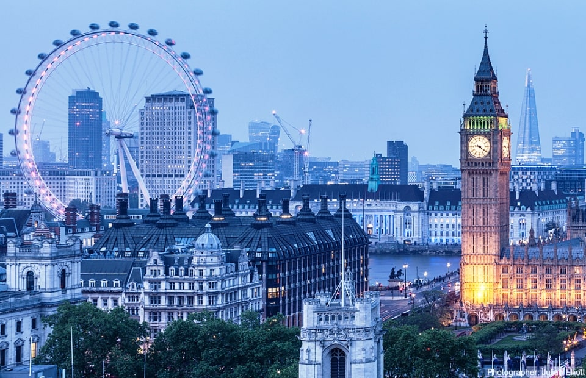

Borough Market FREE admission. The food-focused Borough Market is effectively three markets in one (with restaurants, bars and shops interspersed throughout). The market is open every day with hours of 10 a.m. to 5 p.m.Victoria and Albert Museum FREE admission, open Wed-Sun 10am-5:45pm. The art located here contain a number of genres, disciplines and time periods. The collections are arranged by categories, such as sculptures, Chinese artifacts, and so on.Camden Market FREE admission. The market opens at 10am and goes until late at night. This market sprawls with more than 1,000 stalls, shops, bars and cafes carrying close to everything, from furniture to food and lots of fashion, keeping you busy for hours.Covent Garden FREE admission. This "garden" is open 24/7 and contains a collection of urban streets boasting numerous upscale stores as well as bars, restaurants, art installations and more. From live entertainment to the shops and resturants, you should be prepared to spend some money during your time here.Wembley Stadium (price varies). Whether you are a football fan or not, the energy from this stadium is something you are going to want to experience at least once. There are also concerts and other events hosted at this historic stadium, making it somewhere you should visit at least once during your trip. Olympic Park FREE admission and open every day of the week. Explore the grounds of the 2012 olympics! Explore the park's vast fields and structures that provide you with hours of fun. Throughout the year the park is host to a variety of events, so make sure to check those out too. Portobello Road FREE admission, open Sat 9am-7pm. The market is filled with hundreds of merchants of all kinds selling a variety of common flea market items including antiques, art, jewelry, clothing and food. Locals and tourists alike enjoy coming to the largest antiques market in the world, so you need to check it out.Fabric Club has a £23.00 cover fee. This club is open on Fridays from 11pm-6am, and every other day from 10am-5pm. 3 massive spaces host resident and guest DJs playing drum and bass, dubstep, house and techno. Check this club out if you are looking for a late-night activity.

Big Ben FREE and the London Eye £24.50 are some of London's biggest tourist attractions. The London Eye can offer you a 30 minute relaxing ride with a birds-eye view of the city. However, if you are afriad of heights, maybe skip this attraction. Buckingham Palace tour £30 per adult; £16.50 per child ages 5-17; free for children 4 and younger. On the tour, you'll have access to the 19 State Rooms where the king and members of the royal family host guests for state, ceremonial and official affairs. If you'd rather skip the admission fees altogether, you can still experience Buckingham Palace by witnessing the storied Changing of the Guard (also referred to as Guard Mounting), which occurs at 11 a.m. on Mondays, Wednesday, Fridays and Sundays most of the year and daily during summer.